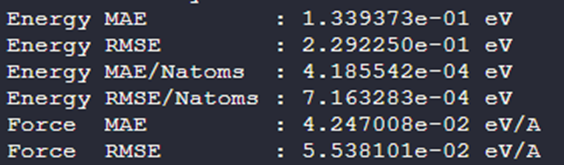

六元掺杂钙钛矿的模型微调示例
More is different —— Philip W. Anderson
作者：why
示例背景
对于元素组分复杂的情况，例如高熵合金等，以往的机器学习势无论是从训练难度和最后的精度来说都会不太令人满意。这是因为对于元素组分较多的体系，多种元素在空间中的分布排列组合会指数爆炸，由于一般的机器学习势没有很好的泛化能力，需要对每一种空间分布都进行采样，这显然是无法实际操作的。现在我们有了泛化能力很强的大原子模型，以往元素组分多的情况就有希望得到解决。那么如何具体使用大原子模型训练出这样的机器学习势呢，我们接下来展示如何使用 PFD-kit 来实现这一目标（并借助 Bohrium 平台）。示例一共分两部分，这里我们先展示模型微调部分，之后的模型蒸馏部分会在其他地方介绍。
目录以及文件介绍
目录
POTCAR——所有 DFT 计算的 POTCAR 存放处
poscar——所有 DFT 计算的 POSCAR 存放处
assets——说明文档里的图片
文件
example.json——微调的参数文件
train.json——模型训练的参数文件
INCAR. *—— 所有的 DFTINCAR 文件
基座大原子模型（由于Github对于文件的大小限制请自行前往aissquare下载，并记得修改名字 https://aissquare.com/models/detail?pageType=models&name=DPA-2.3.0-v3.0.0b4&id=279）
训练思路介绍
即使大原子模型有很强的泛化能力，我们还是要提前结合物理知识，规划好需要准备的构型，以尽可能又快又准的覆盖问题所需的势能面。

针对示例中的问题——(Ba1/2Na1/4Bi1/4)(Ti7/8Zr1/8)O3（以下简称 BNBZTO）钙钛矿，我们可以如此简化问题：钙钛矿材料可以看作一个个正方体堆在一起，最小的橙色原子是正方体面上的 O 原子，而粉色的原子是正方体顶点上的 Ti、Zr 原子（B 位原子），中心则是 Ba、Na、Bi 原子（A 位原子）。不考虑晶格畸变带来的对称性破缺，以及不考虑 Zr 替换掉 Ti 原子的情况，我们只需要去考虑 A 位原子的排列组合即可。我们尽可能简化这个问题，考虑在 2x2x2 的超胞中进行 A 位原子的排列组合，并且在排列组合后根据比例替换掉一部分的 B 位原子，统计最后的分布总数。由于立方晶格的高对称性，其中一些排列组合的构型本质上是等价的，所以实际上的构型是非常有限的。这里我们使用了一种专门计算对称性排布的不可约构型的一种工具 disorder【Phys. Rev. B 102, 134209 (2020), https://github.com/jichunlian/disorder/】来实现这个筛选，最终筛选出来一共只有 16 种构型，我们将这 16 种构型全部保存到了 poscar 当中，命名为 POSCAR-xx。
我们这里假设这些钙钛矿没有长程相互作用，那么原则上来说我们只要采样这 16 种构型就可以描述所有的钙钛矿无序构型了，这几个 2x2x2 的超胞原子数目又少，我们可以事半功倍的训练出一个模型出来。当然这样的假设被证明过于乐观了，我们还得考虑更复杂的相互作用，因此整个微调里还包含了少量 4x4x4 的超胞，它们被命名为 BNBZT_x.vasp。当然 4x4x4 的随机不可约构型是应该是一个天文数字，我们不能遍历，因此这里只选了非常少量的 5 种。我们只需要把这大小两种超胞一起做微调，应该就能描述较强烈的近邻相互作用，以及较弱的次近邻相互作用。So let’s do it.
微调流程部分参数解读
首先是和 bohrium 平台相关的部分，记得改成自己的号码和 ID 以及 project。
{
"name":"test-interface",
"bohrium_config": {
"username": "",
"password": "",
"project_id": 1111,
"_comment": "all"
}
}
其次是跳过 AIMD 的注释，为了减少计算量我选择跳过了 AIMD 的计算，如有需求可以将其打开，我也准备了 AIMD 的 INCAR 供使用。
"task":{
"type":"finetune",
"init_training": true,
"skip_aimd": true
}
然后是结构文件选择，记得把所有的结构都选择上。由于这里构型过于多，我们减少一些微扰的数量。
"conf_generation": {
"init_configurations":
{
"type": "file",
"prefix": "./poscar/",
"fmt": "vasp/poscar",
"files": [
"BNBZT_1.vasp",
"BNBZT_2.vasp",
"BNBZT_3.vasp",
"BNBZT_4.vasp",
"BNBZT_5.vasp",
"POSCAR-01",
"POSCAR-02",
"POSCAR-03",
"POSCAR-04",
"POSCAR-05",
"POSCAR-06",
"POSCAR-07",
"POSCAR-08",
"POSCAR-09",
"POSCAR-10",
"POSCAR-11",
"POSCAR-12",
"POSCAR-13",
"POSCAR-14",
"POSCAR-15",
"POSCAR-16"
]},
"pert_generation":[
{
"conf_idx": "default",
"atom_pert_distance":0.15,
"cell_pert_fraction":0.03,
"pert_num": 5
}
]}
同样的，由于构型过多，适当地缩减一些微调时 MD 的数目，如下设置：
"stages":[[
{ "_comment": "group 1 stage 1 of finetune-exploration",
"conf_idx": [0],
"n_sample":2,
"exploration":{
"type": "lmp-md",
"ensemble": "npt",
"dt":0.001,
"nsteps": 3000,
"temps": [300],
"press":[1],
"trj_freq": 500},
"max_sample": 10000
}]]
由于模型文件过大，这里并没有附带上大原子模型，请自行下载并修改模型的名字。
"init_models_paths":["YOURMODEL_NAME"],
其余参数没有什么要解释的地方，如有疑问请参考基础的 PFD 教程。
训练部分参数解读
一般来说模型的训练部分只有 training 值得留意修改，这里根据最后的构型总数，适当调整了模型微调的总步数。
"training": {
"training_data": {
"systems": [
],
"batch_size": "auto",
"_comment": "that's all"
},
"numb_steps": 20000,
"warmup_steps": 0,
"gradient_max_norm": 5.0,
"seed": 10,
"disp_file": "lcurve.out",
"disp_freq": 100,
"save_freq": 100
}
如果有需求可以适当增加步数。
效果展示

下图中灰色的虚线代表使用 DPGEN 产生 7000 多种无序构型训练出的模型精度，只需要少量构型微调就可以达到 DPGEN 从头训练的效果。

总结
我们借用了一个掺杂钙钛矿的例子，展示了以往机器学习势难以展开的元素组成过多的难题是如何通过预训练-微调-蒸馏快速解决的。处理无序构型不仅需要借助大原子模型强大的泛化能力，还要结合物理思想快准狠地采样势能面。